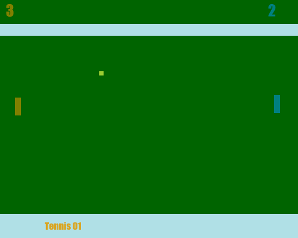
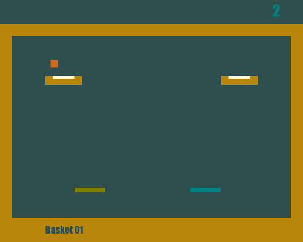

Olympics RR
Remeber good ol days!
Retro Romance is a pong clone, heavily inspired by "Video Olympics" on Atari 2600. It can be played using WASD and arrow-keys but also gamepad. Why gamepad you say? Well so you can build your own paddle using an arduino leonardo and a pot! (see github project)



Random Card Puller
A tool for Spellstone
See what you may get from those har earned shards of yours. It pulls a card at random so result in game will vary. This should be used to get an idea of possible outcome.